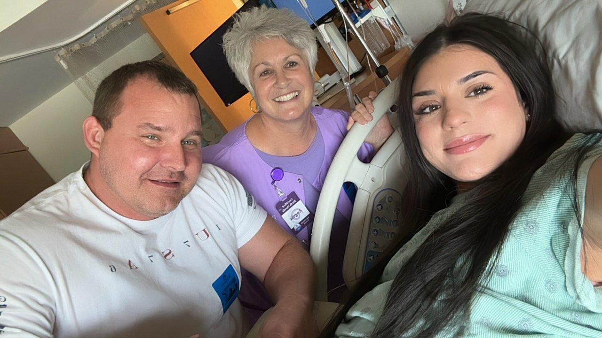

La salud materna en nuestra comunidad y en todo nuestro país está en crisis. Las mujeres de nuestras comunidades son la respuesta.
Cada estado de este país está fallándoles a las madres y a los bebés de maneras que no tienen por qué ser así. No esperamos a que nos salvaran. Aquí decidimos hacer algo. Nos capacitamos, nos apoyamos mutuamente y construimos una red lo suficientemente fuerte como para cambiar los resultados. La evidencia detrás del cuidado de doula es contundente, y cada familia lo merece. Por eso existe Mary’s Hands Network. Comunidad apoyando a la comunidad, un nacimiento a la vez.

Cómo nació Mary's Hands.
Una breve historia.
Mary's Hands Network se fundó como una organización 501(c)(3) de Louisiana en marzo de 2023. Nuestra primera cohorte de doulas en formación ICEA se capacitó ese junio. Para 2024, la red de voluntarias se había expandido por varias regiones de salud de Louisiana, y se formalizó el protocolo de visitas posparto.
En 2025 nos asociamos con Baton Rouge General Medical Center y abrimos el Protocolo IRB #2025-001, registrando cada resultado de parto bajo condiciones formales de investigación.
Hoy, 263 doulas se han capacitado con nosotras; más de 500 familias de Louisiana han sido atendidas; y nuestros resultados publicados muestran una reducción del 65% en cesáreas y del 84% en partos prematuros entre las clientas de MHN. La Cohorte Rho comienza en FranU St. Francis Hall a finales de julio de 2026.
Por qué llevamos el nombre de María de la Visitación.
En la tradición cristiana, una joven María viaja a la región montañosa para visitar a su prima Isabel durante el embarazo de Isabel. Se queda tres meses. El evangelio no registra ningún consejo ni ninguna intervención. Solo presencia.
La palabra griega doulé (δουλη) significa “una mujer que sirve.” Esa es la primera doula en la historia escrita, y es nuestra inspiración. Cada voluntaria que se capacita con nosotras continúa una práctica de acompañamiento de dos mil años de antigüedad.
“Hacemos de doula como la doula original. Continuidad, presencia, estar ahí. Ese es el trabajo.”
Dónde servimos.
Las doulas de MHN atienden a familias en seis de las nueve regiones de salud de Louisiana, con la mayor concentración en las áreas metropolitanas de Greater Baton Rouge y New Orleans, y redes en crecimiento en Lafayette, Shreveport y Lake Charles. ¿Esperas un bebé en Louisiana? Eres elegible para solicitar apoyo de doula gratuito, sin importar tus ingresos, seguro o ubicación.
Louisiana se encuentra entre los peores estados de EE. UU. en salud materna e infantil.
Nuestra tasa de mortalidad materna es casi el doble del promedio nacional. Las mujeres negras enfrentan un riesgo de mortalidad de tres a cuatro veces mayor que las mujeres blancas. Las tasas de parto prematuro y de cesáreas superan las normas nacionales. Estas no son estadísticas abstractas. Son las familias junto a las que caminan nuestras doulas.
La investigación también es clara: el apoyo de doula continuo reduce las cesáreas, disminuye el parto prematuro, mejora el inicio de la lactancia y aumenta la satisfacción de los padres. Cada nacimiento, sin importar ingresos, origen o código postal, merece este cuidado.
Esta es la brecha que Mary's Hands Network se construyó para atender.
Construida una cohorte, una familia, un nacimiento a la vez.
Nuestro equipo, nuestras cohortes, nuestras familias, nuestra comunidad.


Una junta activa, un equipo con raíces.
Mary's Hands Network está gobernada por una junta activa de profesionales clínicos, líderes de la salud, abogados y profesionales de finanzas, y es dirigida en el día a día por un equipo con raíces en las comunidades de Louisiana que servimos.